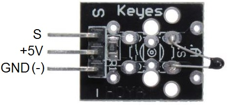
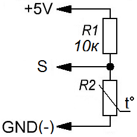
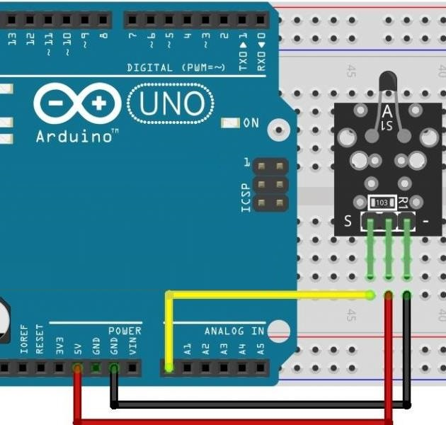

Модуль датчика температуры KY-013
Модуль KY-013 содержит аналоговый датчик температуры – терморезистор. С изменением температуры корпуса терморезистора меняется его сопротивление. С помощью модуля KY-013 электроника грубо определяет температуру воздуха. Основное назначение терморезистора – контроль температуры воздуха, но с его помощью можно контролировать температуру поверхности. Для этого он прижимается механическим креплением к поверхности, а между терморезистором и поверхностью вносят термопроводящую пасту. Диапазон рабочей температуры -55…125°C.
В автоматике используется для грубого определения температуры, что позволяет включать или отключать исполнительные устройства с помощью схем на дискретных элементах. Основное назначение – коррекция, стабилизация режима работы цепей схем при колебаниях температуры.

Кроме терморезистора модуль датчика температуры содержит резистор 10 кОм и соединитель 3 контакта. Это дает универсальность использования. KY-013 может использоваться как устройство крепления терморезистора или как модуль формирующий зависящий от температуры потенциал. В первом случае используется два провода соединяемые с контактами "S" и "—". Во втором случае через третий провод подают питание на модуль KY-013. Его схему рассматривают как резисторный делитель напряжения. Изменение сопротивления терморезистора вызывает изменение потенциала выхода модуля.

Технические характеристики KY-013:
- Рабочее напряжение — 5 В.
- Диапазон измерения температуры — от -55 до 125 ° C.
- Точность измерения — ± 0,5 ° С.
Назначение выводов (рис. 1) представлено в таблице 1.
Таблица 1
| Контакт | Назначение |
|---|---|
| S | Аналоговый выход |
| +5V | +5 В |
| — (GND) | Общий |
Внимание! На некоторых модулях может быть нанесена неправильная разметка контактов.

Скетч:
Температура термистора вычисляться с использованием уравнения Стейнхарта-Харта. В монитор порта выводится температура в градусах Цельсия.
int TPin = A0; int U; float R1 = 10000; // значение R1 на модуле float logR2, R2, T; //c1, c2, c3 - коэффициенты Штейнхарта-Харта для термистора float c1 = 0.001129148, c2 = 0.000234125, c3 = 0.0000000876741; void setup() { Serial.begin(9600); } void loop() { U = analogRead(TPin); R2 = R1 * (1023.0 / (float)U - 1.0); //вычислите сопротивление на термисторе logR2 = log(R2); T = (1.0 / (c1 + c2*logR2 + c3*logR2*logR2*logR2)); // температура в Кельвине T = T - 273.15; //преобразование Кельвина в Цельсия Serial.print("Temperature: "); Serial.print(T); Serial.println(" C"); delay(500); }
Примечание. Уравнение Стейнхарта-Харта — математическая модель, описывающая сопротивление полупроводниковых терморезисторов с отрицательным температурным коэффициентом электрического сопротивления в зависимости от температуры. То есть это уравнение применимо только к тем терморезисторам у который при повышении температуры падает сопротивление (NTC-термисторы, Negative Temperature Coefficient).
Источники
funnydiy.ru - Аналоговый датчик температуры. Модуль KY-013 для Arduino
arduino-tex.ru - KY-013 – модуль аналогового датчика температуры. Подключение к Arduino.